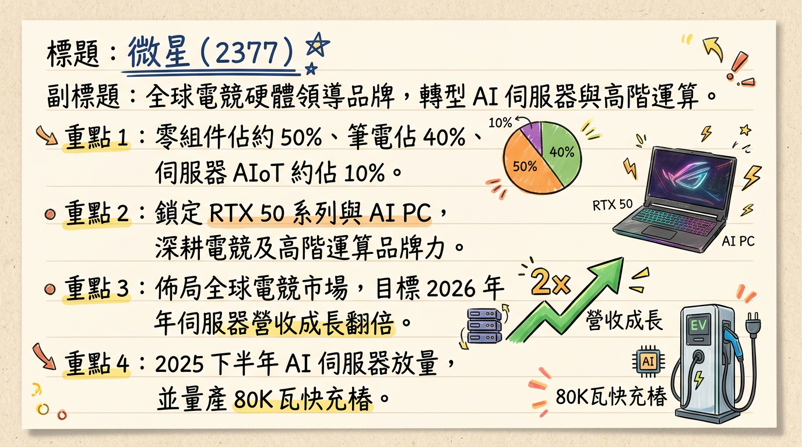
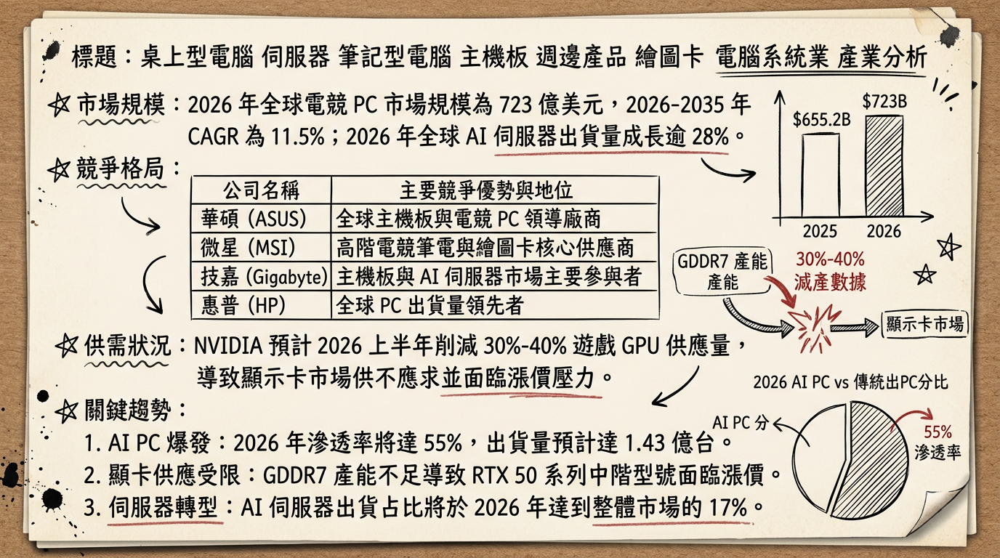
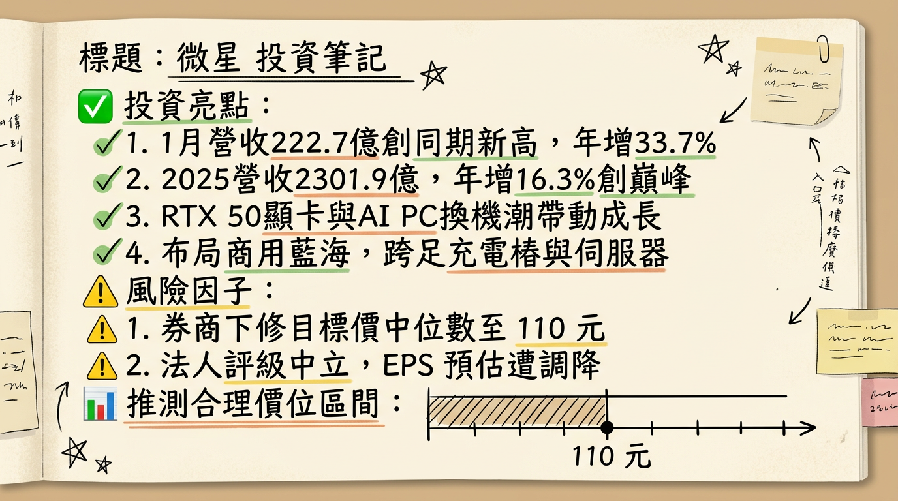

2377 微星 深度研究報告
一句話摘要
微星（MSI）正處於從「全球電競龍頭」轉型為「AI 全方位解決方案商」的陣痛期與收割交界點，受惠於 RTX 50 系列顯卡換機潮與 2026 年伺服器營收翻倍計畫，營運動能強勁，惟毛利率受非中產能移轉成本壓力限制。
公司概覽
微星（MSI）為全球電競與高效能運算硬體領導品牌，近年從主機板/顯示卡（MB/VGA）核心業務跨足 AI 伺服器、AI PC、以及電動車（EV）充電樁等新事業。
營收結構（2025 年度估計）
| 業務類別 | 營收佔比 | 核心產品 |
|---|
| 系統產品 | 40% - 45% | 電競筆電、商用筆電（Prestige/Summit）、AI PC |
| 零組件產品 | 45% - 50% | 顯示卡（RTX 50 系列）、主機板、顯示器、電競週邊 |
| 伺服器/AIoT/其他 | 5% - 10% | AI 伺服器（L6-L11）、EV 充電樁、AMR 移動機器人 |
核心競爭優勢
高階電競品牌力： 專注於中高階市場（High-end segment），在 RTX 5080/5090 等頂級板卡市場擁有高溢價能力與忠實粉絲群。
散熱技術領先： 在 RTX 50 系列液冷方案及 AI PC 散熱設計具備領先地位，有利於提升產品平均單價（ASP）。
全球化彈性產能： 2026 年 1 月正式啟動美國加州生產線，專供北美 AI 伺服器需求，能有效避開地緣政治關稅風險。
財務分析
月營收趨勢表格（近 6 個月）
| 月份 | 金額 (億元) | 月增率 MoM | 年增率 YoY | 備註 |
|---|
| 2026/01 | 222.72 | +32.06% | +33.73% | 創下單月歷史新高 |
| 2025/12 | 168.65 | -16.20% | +33.92% | 年底盤點影響 |
| 2025/11 | 201.18 | -2.45% | +6.86% | |
| 2025/10 | 206.24 | +7.19% | +11.90% | (依 Q4 總額推算) |
| 2025/09 | 192.40 | +0.63% | +5.30% | |
| 2025/08 | 191.20 | +2.20% | +4.10% | |
季度數據與年度趨勢
- 2025 全年營收： 2,301.96 億元（YoY +16.34%），創歷史巔峰。
- EPS 趨勢： 2024 實際為 8.04 元；2025 預估約 6.66~6.8 元（受上半年成本增加拖累）；2026 預估回升至 7.84~10.2 元。
法說會重點
- 2026 伺服器翻倍計畫： 管理層明確給出 2026 年伺服器營收佔比需翻倍至 5% 的目標，並預期 2027 年挑戰雙位數佔比。
- RTX 50 出貨高峰： 預計 2026 年 Q1 及 Q2 將受惠於 NVIDIA RTX 50 系列普及，進入出貨高峰。
- 資本支出佈局： 投入 6,520 萬美元購置加州廠辦，聚焦 L6-L11 伺服器組裝；台灣桃園廠則專攻高階板卡與伺服器核心生產。
券商觀點
| 券商名稱 | 報告日期 | 目標價 (TWD) | 評等 | 2026 EPS 預估 |
|---|
| JPMorgan | 2026/01/27 | 100 | 中立 (Hold) | - |
| FactSet (綜合中位數) | 2026/01/28 | 110 | 持有 | 8.5 |
| 國內投顧大咖 | 2025/11/24 | 110 | 持有 | 7.84 |
| HelloSafe (綜合) | 2025/07/09 | 185 | 樂觀 (過時) | - |
| 外資 (工商報導) | 2024/07/03 | 215 | 極度樂觀 (過時) | 12.0+ |
財報深度分析
利潤率趨勢表格
| 指標 | 2025 Q3 | 2025 Q2 | 2025 Q1 | 2024 Q4 |
|---|
| 毛利率 (%) | 11.26 | 11.11 | 10.27 | 10.30 |
| 營業利益率 (%) | 3.11 | 3.37 | 1.89 | 1.08 |
| 稅後淨利率 (%) | 2.94 | 2.19 | 2.01 | 0.90 |
- 存貨分析： 2025 Q3 存貨週轉天數由 71.04 天升至 82.29 天，法說會定義為「戰略性備料」，為 2026 年初 RTX 50 顯卡上市備貨。
- 資本支出： 2024-2025 年投入約 21 億元購置加州廠辦及桃園土地，將導致 2026-2027 年折舊費用攀升。
股權異動
- 大股東持股： 董事長徐祥持股約 5.55%，近期無顯著減持或轉讓紀錄，股權結構穩定。
- 融資與債務： 目前無發行可轉換公司債 (CB)，負債比率極低（約 13.86%），現金流足以應對 230 億元以上的資本需求。
- 股利政策： 維持高配發率，2025 年發放 5.0 元現金股利（配發率約 80-90%）。
產業分析
全球競爭格局比較（2025-2026）
| 公司名稱 | AI 伺服器進度 | 電競市場地位 | 2025 營收規模 |
|---|
| 微星 (2377) | 剛起步，目標 2026 翻倍 | 全球第 4，專注高階 | 2,301 億 |
| 華碩 (2357) | 發展迅速，與 NVIDIA 緊密 | 全球第 3，通路力強 | 5,500 億+ |
| 技嘉 (2376) | 領先，伺服器佔比最高 | 全球第 5，轉型最早 | 3,000 億+ |
- 市場趨勢： 2026 年 AI PC 滲透率預計達 55%；NVIDIA 預計將 2026 上半年遊戲 GPU 供應量削減 30-40%，導致 RTX 50 系列面臨供不應求與漲價。
近期催化劑
* MWC 2026 展示 AI-vRAN 與 AMR 機器人，拓展非 PC 營收。
* 2026 年 1 月營收創歷史新高（222.7 億元）。
* 美國加州廠正式投產，規避潛在的川普關稅風險。
* GDDR7 記憶體產能不足，衝擊中階顯卡（5070 以下）出貨量。
* 北美電競筆電市場競爭白熱化，壓抑品牌毛利率。
⭐ 成長動能時間軸
- 2025 年 03 月： 桃園龜山新廠動土（投資 15 億元），聚焦 AI 伺服器。
- 2025 年 06 月： 與越南 Viettel 簽署協議，開發 AI 資料中心市場。
- 2026 年 01 月： 美國加州生產線正式運作，提供 L10/L11 伺服器組裝。
- 2026 年 第一季： 波蘭組裝線啟動，負責歐洲伺服器與售後維修。
- 2026 年 第二季： RTX 50 全系列顯卡（5070/5060）全面進入市場放量期。
- 2027 年 全年度： 桃園新廠預計完工量產，伺服器與充電樁產能倍增。
2026 展望
成長動能： AI 伺服器正式放量（營收目標 > 100 億元）、AI PC 2.0（NPU > 40 TOPS）帶動商用換機潮。
面臨風險： 轉型 AI 伺服器腳步較技嘉稍慢，初期研發費用高；且 2026 年記憶體成本上漲可能壓縮部分消費性產品毛利。
投資結論
營運見底回升： 2026 年 1 月營收創新高已證實 RTX 50 系列與 AI PC 需求強勁，基本面進入上行軌道。
伺服器為估值修復關鍵： 若 2026 下半年伺服器營收能如期翻倍，市場將給予較高的 AI 題材本益比（P/E）。
財務體質優異： 極低負債比與高配息策略，提供下檔支撐。
建議目標價： 考量 2026 EPS 預估與產能擴張，給予 NT$ 105 - 135 之目標區間建議，觀察 2026 年 3 月 17 日全年財報發布後的毛利率指引。
本報告由 AI 自動產生，資料來源為公開網路資訊，僅供參考，不構成投資建議。
產生時間：2026-03-04 08:10
📊 資訊卡


